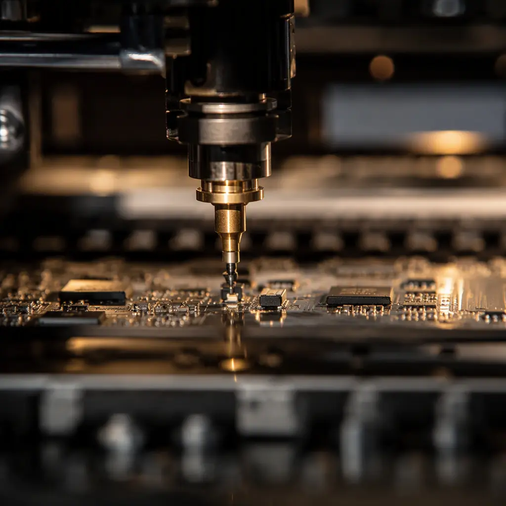
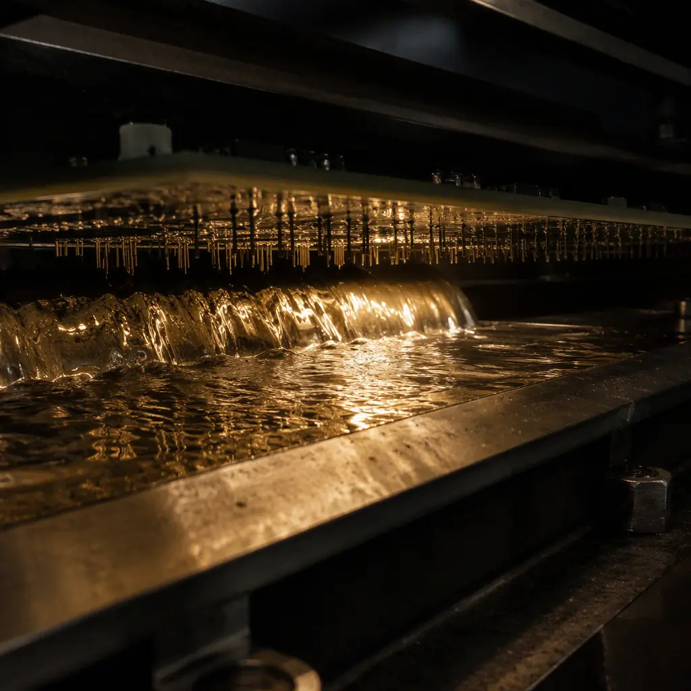
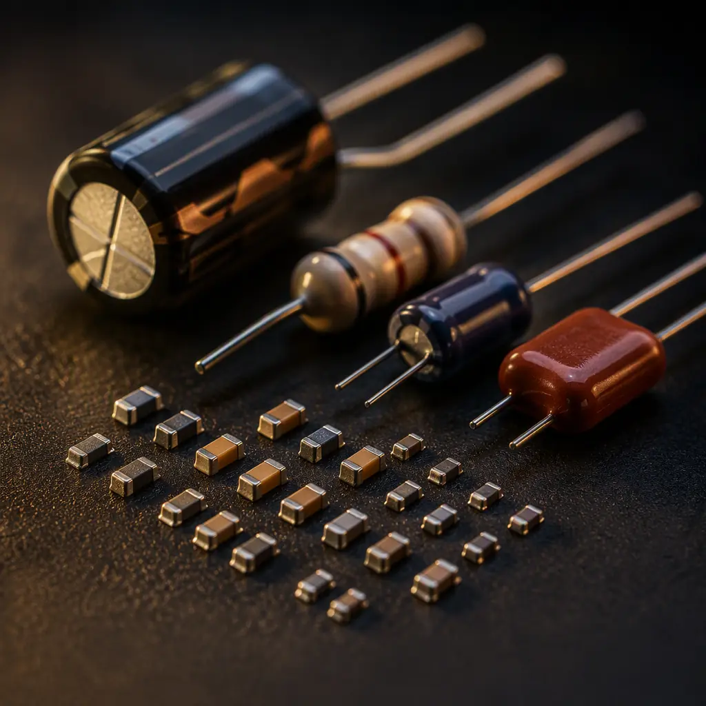

Every PCB assembly decision eventually comes down to a choice between two fundamentally different ways of attaching a component: surface-mount technology (SMT), where parts sit on pads on the board surface and are soldered in a reflow oven, and through-hole technology (THT), where component leads pass through plated holes and are soldered on the opposite side — typically by wave or selective soldering. The choice is rarely all-or-nothing: modern boards are almost always mixed-technology, with 90-98% of components surface-mounted and a handful of through-hole parts where the physics demands it.
At Huaxing PCBA we run 8 SMT lines plus 4 DIP/wave lines, so we assemble both technologies daily and see the real cost and reliability trade-offs on every project. This guide compares SMT and THT across the six dimensions that matter for product decisions — size, cost, reliability, rework, thermal/mechanical performance, and supply — and gives you a practical decision rule for which parts belong in holes.

The Head-to-Head — Six Dimensions That Decide the Process
The table below summarizes the practical differences. After it, each dimension gets a short section with the numbers that matter.
| Dimension | SMT (Surface Mount) | THT (Through-Hole) |
|---|---|---|
| Component size | Down to 0201 (0.6 × 0.3 mm), 0.3 mm pitch BGA | Largest leads; axial/radial parts typically 5 mm+ |
| Board area per part | 40-70% less than THT equivalent | Larger — pads, holes and lead bend all take space |
| Assembly cost per joint | Low — reflow processes all parts at once | 3-5× SMT — each lead needs wave/selective contact |
| Typical placement rate | 20,000-60,000 components/hour/line | 1,000-3,000 insertions/hour/line (manual) or 5,000+ (auto-insert) |
| Solder joint reliability | Excellent with correct reflow profile; CTE mismatch is the risk | Very high mechanical strength — lead absorbs stress |
| Rework difficulty | Moderate — hot air / IR rework, BGA needs X-ray verify | Easy — desolder gun or solder sucker |
| Thermal / mechanical robustness | Good; depends on adhesive and potting for extreme vibration | Best — lead provides strain relief for shock & vibration |
| High-frequency behavior | Excellent — short leads, low parasitic inductance | Poor — lead inductance limits RF use |
Size and Density — Where SMT Wins Decisively
Surface-mount components are dramatically smaller than their through-hole equivalents: a 0402 resistor occupies about 1 mm × 0.5 mm of board, while the same resistance in an axial through-hole package takes 6-8 mm of board length plus its bend radius. For a typical mixed board, converting a THT design to SMT cuts board area by 40-70% — which directly reduces PCB cost, enclosure size, and weight. For miniaturized products like wearables, IoT modules, and dense compute boards, SMT is not a preference; it is a requirement. Our IoT PCB guide shows how far density can go with microvia HDI and 0201 placement.
Cost per Joint — the Economics of Each Process
The cost difference is best understood per solder joint. Reflow soldering creates every SMT joint on the board simultaneously — the marginal cost of one more SMT joint is effectively zero. Through-hole joints are created one lead at a time: wave soldering touches each joint with solder wave, selective soldering programs a nozzle from joint to joint, and manual soldering pays an operator per joint. In practice, THT joints cost 3-5× an SMT joint. For a board with 2,000 SMT joints and 40 THT joints, the THT joints can represent 30-50% of the assembly labor cost despite being 2% of the parts — which is why designers fight to keep the through-hole count low.
Key Takeaway: For volume production, every through-hole part you can convert to SMT — or to a press-fit or surface-mount variant — directly cuts assembly cost. The cost driver breakdown shows placement and soldering as the largest controllable assembly cost line items.
Reliability — THT Is Stronger Mechanically, SMT Is Fine Electrically
Through-hole solder joints are mechanically stronger than SMT joints in one specific sense: the lead passes through the board and anchors the component, so shock and vibration loads are absorbed by the lead rather than concentrated on the solder fillet. That is why connectors, transformers, large electrolytic capacitors, and anything subject to repeated mechanical stress — power entry, I/O, mounting points — still go through-hole in ruggedized designs. SMT joints, by contrast, rely on the solder fillet alone; under extreme vibration, heavy SMT parts need adhesive (bonding) or potting to survive. Our vibration and shock testing guide quantifies the difference, and our potting guide shows the mitigation used in harsh environments.
Electrically, SMT is the superior technology: lead inductance of a through-hole part is 5-15× that of its SMT equivalent, which matters above a few hundred MHz. For signal integrity, power integrity, and high-frequency design, SMT is mandatory — see our signal integrity guide for the numbers.
Rework and Repair — the Practical Difference
Through-hole parts are the easiest components in the world to remove: heat the joint, pull the lead, done. SMT rework ranges from trivial (two-terminal passives with a soldering iron) to demanding (BGAs needing hot-air rework stations and X-ray verification). If your design is prototype-stage and you expect component swaps, through-hole connectors and large parts simplify the debug cycle. Our rework and repair guide covers BGA reballing, pad repair and the tools involved.
The Mixed-Technology Reality — Which Parts Stay in Holes
In practice, 90-98% of a modern board is SMT, and the through-hole remainder is a deliberate engineering choice. The parts that legitimately stay through-hole: (1) connectors and terminal blocks that must survive mating cycles and mechanical pull, (2) large electrolytic capacitors and power inductors whose mass and thermal load exceed SMT limits, (3) transformers, relays, and sockets where a removable/field-serviceable interface is required, (4) parts designed only in through-hole packages with no SMT equivalent. Everything else should be SMT — and if a "through-hole-only" part exists in an SMT version, the SMT version almost always wins on cost and density.
Assembly Flow for Mixed Boards — How It Actually Runs
Mixed-technology boards run in a defined order: SMT placement and reflow first, then through-hole insertion and wave/selective soldering, then inspection and test. The SMT side runs on our high-speed lines at 8 million solder points per day of capacity; the through-hole side runs on 4 DIP lines with wave and selective soldering. Our assembly process guide walks the full flow step by step, and our wave vs selective soldering guide covers how to choose the through-hole soldering method for your board's mix. If you are designing for assembly, our DFM tips include the through-hole rules that keep DIP parts manufacturable — hole-to-pad ratios, lead-length limits, and orientation for wave soldering.


Decision Rule — a Practical Checklist
Will the part face repeated mechanical stress (mating, vibration, shock)?
Connectors, terminal blocks, relays, and large capacitors → through-hole. Everything else → SMT. For extreme environments, combine THT retention with conformal coating or potting.
Does the design need to be small or light?
SMT, unambiguously. Through-hole parts force board area, layer count, and enclosure size up. For wearable, handheld, or high-density designs, THT is limited to the few absolutely necessary connectors.
Is this high-volume production?
SMT wins on cost per joint at every volume above a few hundred units. THT's manual-friendly nature only makes sense at prototype scale or for parts with no SMT alternative.
Does the part operate above ~100 MHz?
SMT mandatory — through-hole lead inductance destroys high-frequency performance. Our RF PCB guide and impedance control guide cover the SMT-first design rules for high-speed sections.
Is field service / part replacement expected?
Through-hole sockets and connectors make field replacement practical. SMT-only boards are typically throw-away at the module level — fine for consumer products, a consideration for industrial equipment with long service lives.
Summary — Design the Mix, Not the Either/Or
The SMT vs through-hole question is not a technology contest; it is a per-component decision. Surface mount delivers density, cost, and electrical performance; through-hole delivers mechanical robustness and serviceability where it is genuinely needed. A well-designed product uses SMT for 90-98% of its components and spends its through-hole budget on exactly the connectors, power parts, and mechanical interfaces that need it. At Huaxing PCBA we build both technologies and help customers tune that mix — our engineering team reviews BOMs for through-hole parts that could be converted to SMT at lower cost, and flags the THT parts that should stay for reliability reasons. Send us your BOM for a free assembly-cost and DFM review.